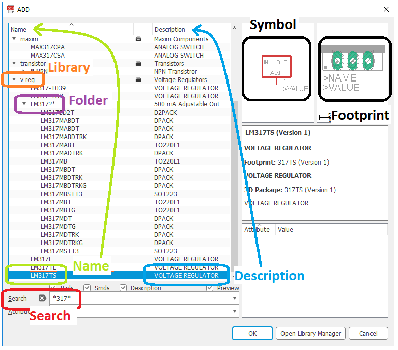
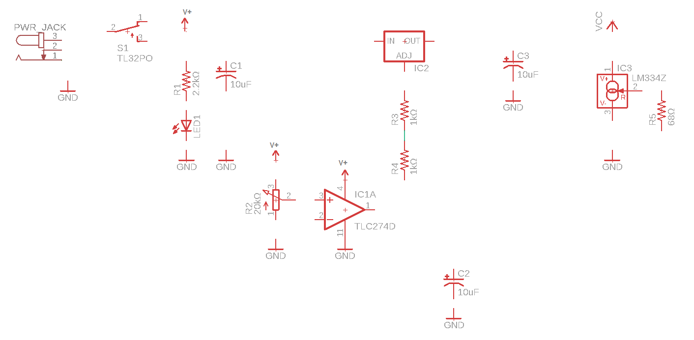
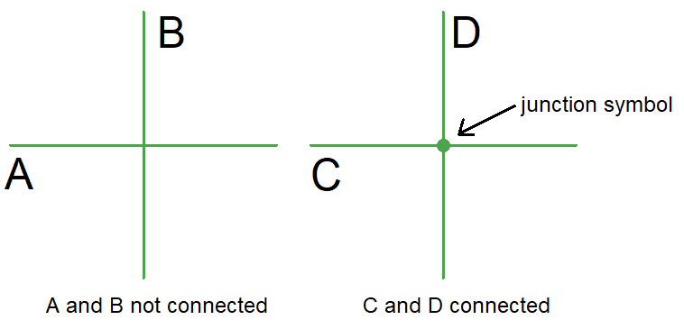
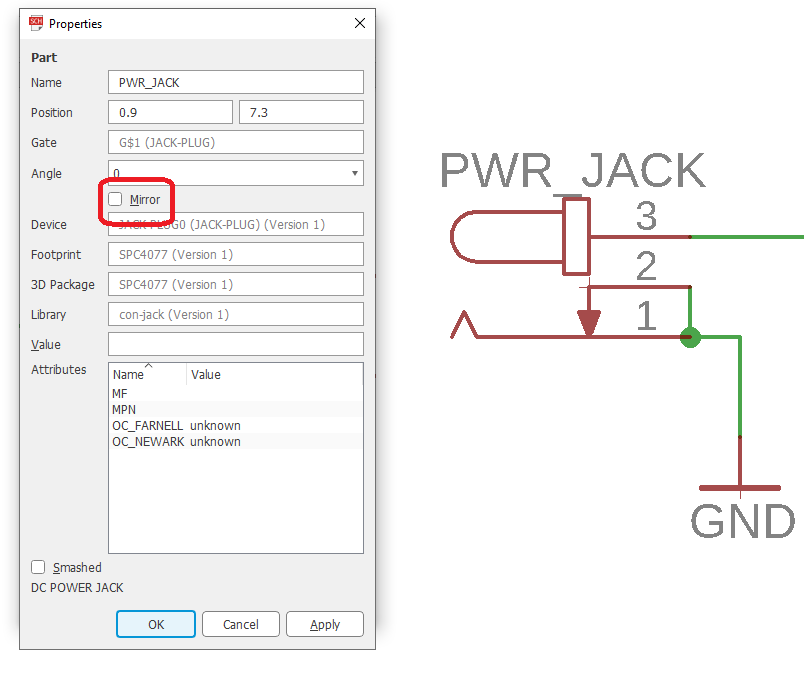
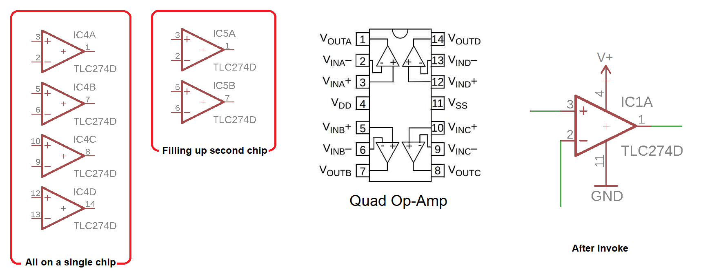

EENG 393
In Lab 6 - EAGLE schematicRequirements
There is no turn-in associated with this inLab. You will need to follow the instructions given below in order to create your schematic. Since each student needs to complete their own schematic (for your own PCB), you should complete the walk-through in this lab on your own. When you complete this walk-through you will have completed a good portion of the assignment due next week.Creating a schematic in EAGLE
Today you will be creating a schematic for the constant voltage regulator portion of the uSupply. We will substitute the LM317 in place of your LT3080 because we do not have the footprint for this component, yet. You will rectify this in the next lab.Software install
Create a project directoryCreate an autodesk account at https://accounts.autodesk.com/
Download and install EAGLE from https://www.autodesk.com/products/eagle/free-download
Download and install SparkFun Eagle library
- Goto https://github.com/sparkfun/SparkFun-Eagle-Libraries
- Click on the green "Code" button, select "Download Zip",
- Select the "Download ZIP option,
- Goto the download directory on your machine,
- Right-mouse click on the "SparkFun-Eagle-Libraries-master" zip file and select "Extra All" in the download folder,
- Move the "SparkFun-Eagle-Libraries-master" folder (the inner-most one) to the root EENG393 directory,
- Launch EAGLE
- Right-mouse click on the "Libraries" folder and select "Open Library Manager",
- In the Library Manger pop-up, select "Browse",
- Navigate to your project director and into the "SparkFun-Eagle-Libraries-master" directory,
- Select the first lbr file "LilyPad-Wearables" and then scroll down to the last lbr filea"User-Submitted" and hold the shift key while left mouse clicking to select all the lbr files in the SparkFun Eagle library,
- Click "Open",
- You should see a message indicating that all the libraries have been added (there were 31 at last count).
- Launch EAGLE 9.1.2, sign in using Autodesk account, close EAGLE
- This should have created application folders in Z:\adit\My Documents\eagle
- Browse to C:\sw\EAGLE-9.1.2\lbr
- R-click on "SparkFun-Eagle-Libraries-master", Copy
- Browse to Z:\adit\My Documents\eagle\libraries
- R-click, Paste
- Launch EAGLE, expand Libraries, libraries (User Libraries), confirm that Sparkfun libraries are now available
Schematic Capture with Eagle
Create a new project and schematic
- Launch EAGLE ,
- Click Options -> Directories…,
- In the Directories pop-up, in Project add your course directory followed by a semicolon. Click OK when done,
- In the Control Panel, open the Projects folder by clicking on the triangle to its left,
- Right-mouse click on "Projects", navigate to your lab06 directory, and select "New Project",
- Fill in the project name as lab06 and hit enter,
- Right-mouse click on lab06 and select New → Schematic
The user interface
By PCB layout tool standards, the user interface for EAGLE is basic. Most of your interactions will be through the left toolbar shown in the image below. The icons in this toolbar represent actions that you can perform in the main schematic drawing area. You can discover the name of each tool in the toolbar as a pop-up by loitering your cursor over the icon for a second or two. The 9 tools highlighted in the image below are used in today's lab - you will be introduced to others in the coming labs.The toolbar above the schematic area, called the "top toolbar" is tool specific. In other words, selecting different tools in the left toolbar will change what is shown in the top toolbar. For example, try selecting the Move and then the Line tools from the left toolbar and notice how the top toolbar changes.

Add components to a schematic
You will now add the elements of your simple power supply. Before we start, I need to introduce you to the most used control in eagle, zooming. By rotating the mouse scroll wheel forward you zoom into the schematic at the point you are pointing at with the mouse. Rotating the mouse scroll wheel backwards you zoom out of the schematic. I never use the side scroll bars to move my view of the schematic; once you are familiar with the mouse scroll wheel technique you will be able to fly around the schematic gracefully.In this section you will be adding elements to your schematic. The ADD pop-up window will be an important menu element during this process. There are several terms used in the following text that are defined in this image. Please review and reference as you go through the following steps.

- In the left toolbar, click "add part" tool,
- In the Search area type *317*. Note that the "*" character is a wildcard and can represent any number of unknown characters,
- Find the v-reg.
- Left click on "LM317TS. Note:
- The schematic symbol is shown in the upper right pane. This is the symbol that will appear on your schematic,
- The layout footprint is shown in the adjacent pane. This will be the physical area occupied by the LM317 on the printed circuit board,
- Click Ok,
- Your cursor should now change into the schematic representation of the LM317 voltage regulator,
- Right-mouse click to rotate the LM317,
- Left mouse click to place a copy of the LM317,
- Go ahead and place a couple more copies,
- Press the escape key when you are done placing,
- Press escape (again) to get out of the ADD pop-up,
- In the left toolbar, click on the Delete tool,
- Left click on (and remove) all but one of the LM317,
- Press Ctrl-Z to undo a previous action,
- Move a part:
- Click on the Move tool in the left toolbar,
- To select a part (to move) you must click on its "handle", the small plus symbol located on or near the part,
- Use the mouse to reposition the part,
- Right-mouse click to rotate the part 90°,
- Left mouse click to place the part or escape to abort the move,
- Copy a part:
- Click on the Copy tool in the left toolbar,
- To select a part (to copy) you must click on its "handle", the small plus symbol located on or near the part,
- Use the mouse to reposition the part,
- Right-mouse click to rotate the part 90°,
- Left mouse click to place the part or escape to abort the move,
- Save your schematic:
- Click on File → Save,
- In the Save as pop-up use lab04 as the file name,
- Click the Save button
- Close your schematic. While it will be tempting to close your
schematic using the "X" in the upper right of the schematic
window, break this habit now. Because as you start manipulating
both a schematic and a layout for a circuit, closing one file before
saving the other will create file inconsistencies between the
schematic and layout. File inconsistencies will almost
always result in the complete loss of all your work!
So, follow these steps to properly close a project schematic and
layout pair,
- Switch from the schematic window to the Control Panel window,
- Right-mouse click on the orange "E" to the left of lab04,
- Select Close Project
- Open your project by right clicking on the orange "E" to the left of lab04 and selecting Open Project,
- Continue to add the parts listed in the table below,
- BE aware that you may need multiple copies of some parts,
- Don't worry about the component values for now, you will fix them in the next section.
| Search | Library | Folder | Name | Description | Value |
| *317* | v-reg | LM317TS | VOLTAGE REGULATOR | ||
| *frame* | frames | FRAME_A_L | FRAME A Size, 8 1/2 x 11... | ||
| *resistor* | RCL | R-US | R-US_R1206 | R1206 | 2.2kΩ, 1kΩ 68Ω |
| *capacitor* | rcl | CPOL-US | CPOL-USB | PANASONIC_B | 10uF |
| *switch* | Switch | TL32PO | TINY SWITCH ON - MOM | ON/OFF | |
| *pot* | pot | EVU | EVUF2A | EVUF | 20kΩ |
| *led* | led | LED | LEDCHIPLED_1206 | CHIPLED_1206 | green |
| *gnd* | supply1 | GND | SUPPLY SYMBOL | ||
| <blank> | supply1 | V+ | Supply Symbol | ||
| <blank> | supply1 | VCC | Supply Symbol | ||
| *jack* | con-jack | JACK-PLUG | JACK-PLUG0 | SPC4077 | PWR_JACK |
| *TLC274* | linear | TLC274 | TLC274D | SO14 | |
| *LM334* | linear | LM*34 | LM334Z | TO92 |

Show op-amp power pins
To see the power supply, you need to invoke it. Do this:- Click on the Invoke tool,
- Click on the TLC274D in your schematic,
- In the Invoke: IC3 (P) pop-up click on: "P PWR+- request 0 0" row,
- Click OK,
- Your cursor should change to a pair of vertical lines. These are the power supply wires for the TLC274P op-amp. Place the pair on lines on the nose of the TLC274 so that they just fit,
- When you click the power pins onto the op-amp you will see their pin numbers,
- Connect V+ to pin 4 and GND to pin 11.
Change part values
- Click on the Value tool in the left toolbar,
- Click on the component's handle,
- In the Value pop-up enter the new value. Use the values given in the table above. Hint, to get "Ω" to appear type "Alt 234", where the 234 is typed on your keypad - make sure Num Lock is on,
- If you get a warning (like the one below) when trying to change a component
value, just click on Yes and proceed to change the value,

Connect parts with wires/nets
Now that you have your parts, it's time to connect them. In reality, I typically iterate between adding parts and connecting them into the circuit. Let's start:- Click on the line tool,
- Left mouse click on the lower right terminal of the ON/OFF switch,
- Move the mouse around and note that a wire is drawn between the current mouse position and the right terminal of the switch,
- Try using the mouse scroll wheel to zoom in and out while still being attached to the right terminal of the switch,
- Left mouse click on the leftmost terminal of the LM317 (labeled "IN"),
- Move the mouse and note that a wire is drawn between the current mouse position and the left terminal of the 317. This indicates that you can continue wiring,
- Press escape to stop wiring. You could also have performed a quick double left-click on the left terminal of the LM317 to indicate that you do not want to continue wires after connecting to the LM317,
- To test that the veracity of the connection:
- Click on the Move tool in the left toolbar,
- Click on the LM317,
- Wiggle the mouse and verify that the wire follows the LM317,
- Press escape to undo your move and exit the Move tool,
- Continue connecting components until your schematic looks like
the one below. If you get a warning (like the one below) about
merging nets, just click Yes.


Schematic Best Practices
A schematic is an objective representation of your design decisions and thoughts. Being a person who takes pride in their work, I try to make sure that my schematics are easy to read. An easy to read schematic makes it easier for the members of your engineering team to verify your design and ensure that your teams efforts will succeed. Here are a few things that you can do to improve the readability of your schematic.- Add junctions - When two wires cross or meet in a schematic, there
is the question of whether or not they are connected. The junction
marker (a solid green circle) placed at the intersection of wires
indicates that they are connected. If the intersection of 2 wires
does not have a junction you should assume that the wires are not
connected. To add a junction marker click on the Junction tool in
the left toolbar and then click on the intersection that you want
to add a junction marker to.

- Move labels - By default, each component in EAGLE has a name and
value which are attached to the component using a default position.
Sometimes this position gets in the way of important circuit elements.
When this happen, use the Smash/Resposition Attributes tool to separate
the name and value of
a component from the component. In the figure below, I want to
reposition the value of the POT.
select the Smash/Resposition Attributes tool from the left toolbar
and click on the POT's
handle (the small "+" symbol) which causes the "R2" and "20kΩ"
to now have handles as shown in the middle figure. I then use the
Move tool to grab R2 by its handle and move it out
of the way, above the POT.

- Add credit - A schematic serves many different roles in addition
to being a stepping stone towards the construction of a circuit board.
As a consequence you need to assign attribution to your schematic in the
lower right document area of the schematic. In our class attribution
is assigned using the following format:
Name: <Your name> <Today's date> Course: EENG xxx - ICE Field Session
To add text click on the Text tool in the left toolbar. Type your attribution text in the "Enter Text" area using Shift+Enter to add new line. When you have entered all the text in the Text pop-up, click OK. With the text dangling off your mouse cursor, go to the top toolbar and switch to the "94 Symbols" layer, position your text and then left mouse click to place the text. Hit escape twice to exit. - Mirror part - optional
Sometimes a part's orientatation interferes with your ability to
convey some design concept. When this happens you can use the
mirror to change the perspective of a part. To do this....
- Click on the information tool (in upper left of the toolbar),
- Click on the parts's handle,
- In the Properties pop-up, check mirror,
- Click OK

After clicking OK, you can use the move tool to select the part and move it into position in its new perspective. - Respect the origin - When you placed your schematic frame, you may not have
payed attention to EAGLE's global coordinate system. The origin in EAGLE's
schematic is indicated by a "+" symbol fixed on the schematic (as shown
in the image below). If the lower left-hand corner of the schematic frame is
not coincident to the origin you will need to move everything as follows:
- Zoom out to view the entire schematic,
- Select everything in the schematic by pressing Ctrl-a
- Select the Move tool in the left toolbar,
- Press Ctrl and then right-mouse click to grab everything in your schematic as a group,
- Move everything until the frame and EAGLE origin coincide,
- Left mouse click to place the schematic.


Multi-device components
When you add a device with several identical functional units, you may see the device represented as individual functional units. This capability comes with some special commands that we will now cover.Our power supply uses a quad operational amplifier. When the term "quad" is used to describe an operational amplifier, it means that there are four operational amplifiers inside the single integrated circuit package. EAGLE can treat each one of the four operation amplifiers like its own component on the schematic even through they all belong on a single integrated circuit. To see what I mean do the following:
- Select the ADD tool from the left toolbar
- Search for *TLC274*, go to the "linear" library, open the "TLC274" folder, and select the "TLC274D" in the "SO14" package,
- Your pointer will change to a operational amplifier symbol,
- Left mouse click somewhere on the schematic,
- Add five more operational amplifiers.

Notice that the first four operational amplifiers that you placed all had names "IC1*" where * was A-D. The letter designates which operational amplifier on the chip (shown at right) is being used.
Start by deleting all the additional op-amps that you just created. To see the power supply, you need to invoke it. Do this:
- Click on the Invoke tool,
- Click on the TLC274D in your schematic,
- In the Invoke: IC (P) pop-up click on: "P PWR+- request 0 0" row,
- Click OK,
- Your cursor should change to a pair of vertical lines. These are the power supply wires for the TLC274P op-amp. Place the pair on lines on the nose of the TLC274 so that they just fit,
- When you click the power pins onto the op-amp you will see their pin numbers,
- Connect V+ to pin 4 and GND to pin 11.
Swapping op-amps
Since all the op-amps in the TLC274D are the same, it does not matter which is associated with a particular function. In some cases it may make your layout much nicer if you could swap which op-amp on the chip is associated with a particular function. EAGLE CAD has a swap function which allows you to swap which of the four op-amps inside the chip is being used.- Click the add part tool,
- Add two extra TLC274D op-amps off to the side of the schematic,
- Click on the Gateswap tool,
- Click on the first extra op-amp,
- The op-amp should be highlighted,
- Click on the second extra op-amp,
- The op-amps should have swapped locations.
Nameing nets
Often there is a special function associated with a signal in your schematic that you would like others, who are reading your schematic, to understand. In this case, you will want to name the signal. A signal in EAGLE is called a net to elicit the idea of a network of wire. By "network" I mean a connected collection of wire, everywhere having the same potential. This network can have branches that go to different destinations. For example, in the image below, the region circled in purple is a single net that is connected to the switch, VIN, resistor R1, capacitor C4 and IC2 is a single net.
The EAGLE CAD schematic capture software will always assign a name a name. If the net is connected to a supply signal (like VIN, VCC and GND), the net will be named with the supply name. Otherwise, EAGLE will name generate a generic name "N$<NET_NUMBER>" where NET_NUMBER is an integer value that is incremented everytime you create a new net.
You can replace the name of a generic net using the Name tool (just to the left of the Value tool). To do this, select the Name tool, then click on the net you want to rename. In the Name pop-up, type in the name of the net and then click OK. The cursor will be replaced with the name of the net. Move the net name to where you want it placed (probablly adjacent to the net you are naming) and left click to place.
There will be times when the net name is not being displayed displayed on schematic, but you would like to see it. In this case, you need to use the Label tool, just above the Value tool (it looks like a tag with the letters "AB" inside it). To show a net name, click on the Label tool then click on the net. The cursor will change to the net name, then position the name where you would like it shown on the schematic then left mouse click to place the name.
Air wires
There are times when drawing every wire on a schematic can lead to confusion on the part of someone reading the schematic due to all the crossing wires. While it may seem inevitable that there are going to be crossing wires, you can use air wires to eliminate the clutter. An air wire creates a physical connection between two wires by naming the wires with the same name. You have already done this several times in your schematic when you placed GND at several different locations - you didn't physically wire all those grounds to the same node, you just naturally assumed that they were connected to the same common ground.Renumber
Often, in the process of drawing a schematic, you will add and subtract parts. This will often lead to gaps in same part names (R1, R2, R4 …) and same parts that are next to each other with a large difference in part names (part R3 being adjacent to part R17). While these may seem annotances, they can be considered defects in the schematic - parts that are near one another are typcailly logically related and, as a consequence, should have "nearby" part names. The EAGLE schematic capture software has a User Library Program that can renumber a schematic for you. To do this, follow this procedure.- File -> Run ULP...
- In the ULP pop-up, click the Browse... button
- In the Run pop-up navigate to: C:\sw\EAGLE 9.1.3\examples\ulps\examples
- Select "renumber-sheet.ulp" and click Open
- In the "Eagle: Renumber Schematic" pop-up,
- Uncheck "Renumber parts without package"
- click OK

You are now well on your way to completing the assigned Lab work for this week. Chec back on the main lab page for specific deliverables. You may also want to check the Canvas page for the rubric used to evaluate your work.